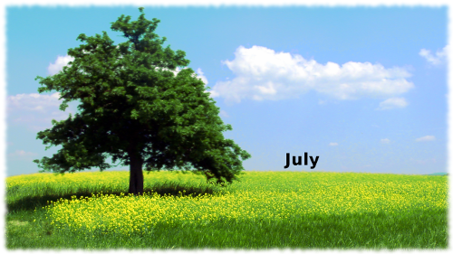
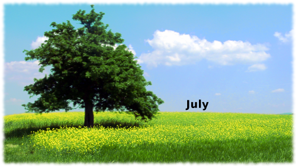
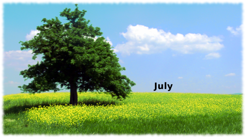

All HTML and CSS is my own. I used a number of internet resources, with a heavy reliance on W3 Schools.
I used the Bootstrap framework to implement a responsive design based on their grid system. This involves linking a bootstrap css file to the project and placing the various elements of each page into divs with bootstrap 'row' and 'col' classes. These can then be used to easily implement responsive design, including the stacking of elements at specific breakpoints.
The main resource used for this were a series of YouTube tutorials produced by 'The Website Boy' (link below).
TutorialI also used @media queries to define my own breakpoints for simpler things like setting specific elements to be invisible.
Inkscape was used to produce a simple 'bee seasonal' logo for the site, the image can be found in images/logos.
Gimp was used to subtly alter the images used to depict the seasons. The original images are shown below, followed by the edited versions.

Gimp was also used to remove the background of several of the images used for produce items, as shown below. Although due to time-constraints, and the large number of images to process, some of the images still need their backgrounds removed.

This is the section I spent the most time on and learnt the most about. It involved a fair amount of JavaScript. The main resources used for this were the Eloquent Javascript book as well as the W3 schools website, and a number of video tutorials and blogs.
The idea for this tool came from a similar website called 'Eat Seasonably'. The seasonal information is based on the BBC food website.
Eat SeasonablyI aimed to use as much pure JavaScript as possible, as opposed to Jquery or other libraries. This decision was taken partly in order to ensure consistency across multiple browsers, and partly to enable me to learn more about how JavaScript actually works. Minimal Jquery was used to implement pop-up boxes through the Bootstrap framework, as Bootstrap uses Jquery for its JavaScript features.
Each item of fruit or veg is stored in an object, created from an array of simple strings using a constructor. This makes it very easy to add new items of produce to the site once it is set up. Similarly each month is an object with an associated array of fruit/vegetable objects. If a basic naming convention is used for images, much of the process of adding new objects is automated, making the code more readable, and more user friendly.
The Produce Checker Tool is also fully responsive, hopefully enabling it to be used on mobile devices (although this hasn't been tested). This again relied on the Bootstrap grid-system.
I used 'lightbox' style pop-ups to give more information about specific fruits and vegetables, using the Bootstrap framework. These popups are referred to as 'modals' and were incorporated into my JavaScript, using a minimal amount of Jquery. While I would have prefered to implement these using pure JavaScript, time constraints meant that I felt the need to compromise here. I suspect also that this method is more aesthetically pleasing than something I could have written in JavaScript alone at this stage.
The site works very similarly in the latest versions of Firefox, Chrome and Firefox.
The site hasn't been tested in any older browsers.